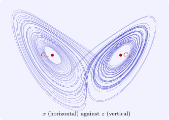

13.4 Chaos in the Lorenz system
Lorenz (1963), studying a drastically simplified model of convection in the atmosphere, found the system \[ x' = \sigma (y - x), \qquad y' = x(\rho - z) - y, \qquad z' = xy - \beta z , \] and with \(\sigma = 10\), \(\beta = \frac 83\), \(\rho = 28\) a solution that never settled down, never repeated, and was exquisitely sensitive to its initial state.
Theorem 13.4.1. For the Lorenz system with \(\sigma , \beta , \rho > 0\):
- (i)
- the flow contracts volumes: \(\operatorname {div}f = -(\sigma + 1 + \beta ) < 0\), so the volume of any region shrinks like \(e^{-(\sigma + 1 + \beta )t}\);
- (ii)
- there is a bounded ellipsoid that every solution enters and never leaves, so all solutions exist for all \(t \geq 0\) and are eventually bounded;
- (iii)
- the origin is globally asymptotically stable for \(\rho < 1\); at \(\rho = 1\) a pitchfork bifurcation creates two further equilibria \(C_\pm = (\pm \sqrt {\beta (\rho - 1)}, \pm \sqrt {\beta (\rho - 1)}, \rho - 1)\), which are stable for \(1 < \rho < \rho _H\), where \(\rho _H = \sigma (\sigma + \beta + 3)/(\sigma - \beta - 1) = 24.74\) for the standard \(\sigma , \beta \), and lose stability in a subcritical Hopf bifurcation at \(\rho _H\).
Proof. (i) \(\operatorname {div}f = -\sigma - 1 - \beta \), and volume changes at the rate of the divergence (Section 4.2). (ii) For \(V = x^2 + y^2 + (z - \sigma - \rho )^2\), a direct computation gives \(\dot V = -2\bigl (\sigma x^2 + y^2 + \beta z^2 - \beta (\sigma + \rho )z\bigr )\), which is negative outside a bounded ellipsoid; so a large sublevel set of \(V\) is positively invariant and absorbs every orbit. (iii) For \(\rho < 1\), \(W = x^2/\sigma + y^2 + z^2\) has \(\dot W = -2\bigl (x^2 + y^2 - (1 + \rho )xy\bigr ) - 2\beta z^2 < 0\) away from \(0\), since the quadratic form in \(x, y\) is positive definite when \(\rho < 1\); \(W\) is a global strict Lyapunov function. The equilibria \(C_\pm \) solve \(x = y\) and \(x^2 = \beta z\), \(z = \rho - 1\); their stability boundary comes from the Routh–Hurwitz conditions for the cubic characteristic polynomial, which we omit. □
For \(\rho = 28 > \rho _H\) all three equilibria are unstable, yet every orbit is trapped in a bounded region of zero volume (by (i), the attracting set has zero volume). Orbits wind around \(C_+\) and \(C_-\) in turn, switching irregularly between them, on the Lorenz attractor (Figure 18), a fractal set of dimension about \(2.06\). Two features define the motion as chaotic: it is aperiodic, and it has sensitive dependence on initial conditions: nearby orbits separate exponentially, at a rate given by the largest Lyapunov exponent, about \(0.906\) for these parameters. An initial uncertainty of \(10^{-9}\) grows to the size of the attractor in about \(25\) time units, and long-term prediction of the individual orbit is impossible, although its statistical properties are perfectly reproducible. Continuous dependence on initial data (Theorem 2.4.2) still holds on any fixed interval: the bound \(e^{Lt}\) is simply large.

Period doubling
A route to chaos that can be studied completely occurs in the logistic map \(x_{k+1} = rx_k(1 - x_k)\), the discrete analogue of the logistic equation, which arises as a Poincaré map of flows. As \(r\) increases, the stable fixed point gives way at \(r_1 = 3\) to a stable cycle of period \(2\), at \(r_2 = 1 + \sqrt 6\) to period \(4\), then \(8, 16, \dots \), with the doubling values accumulating at \(r_\infty = 3.5699\), beyond which the map is chaotic for most \(r\). Feigenbaum (1978) found that the ratios \((r_k - r_{k-1})/(r_{k+1} - r_k)\) tend to \(\delta = 4.6692\dots \), the same for every smooth map with a single quadratic maximum: a universal constant, observed experimentally in fluids and electronic circuits.
Questions on this section
Stuck on something here? Ask below and it stays attached to this topic.